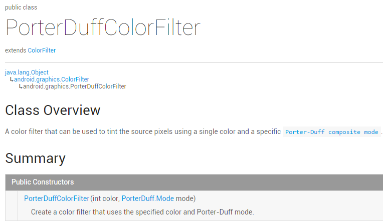

本節の序文：
うーん、本来自分は今日は書かないつもりだったけど、やっぱり書くことにします。せっかくの暇ですからね~。本節でお届けするのはColorFilterの3つ目のサブクラスです：PorterDuffColorFilter、見るとPorterDuffみなさんもきっとお馴染みでしょう。もし前のAndroid基礎入門チュートリアル——8.3.5 Paint APIの—— XfermodeとPorterDuff詳細解説(二)実は効果は同じです。ただここでは色を使うだけで、直接設定するだけです。では、簡単な例を書いてみましょう。6つの異なる色を選び、18のモードをテストします！ 公式APIドキュメント：PorterDuffColorFilter重要なのはやはりそのコンストラクタにあることがわかります：

前が色、後ろがモードです~。さあさあ、例を書いてみましょう：
1.テストコード例：
実行結果画像：

コード実装：
ここではGridViewを使ってそれらを表示します。まず各itemのレイアウトを書いてみましょう：view_item.xml：
<?xml version="1.0" encoding="utf-8"?>
<LinearLayout xmlns:android="http://schemas.android.com/apk/res/android"
android:layout_width="match_parent"
android:layout_height="match_parent"
android:orientation="vertical">
<ImageView
android:id="@+id/img_show"
android:layout_width="wrap_content"
android:layout_height="wrap_content"
android:src="@mipmap/ic_launcher.html" />
<TextView
android:id="@+id/tv_color"
android:layout_width="wrap_content"
android:layout_height="wrap_content"
android:gravity="center_vertical"
android:textSize="12sp"
android:text="颜色"
android:textColor="#FFFFFFFF" />
<TextView
android:id="@+id/tv_mode"
android:layout_width="wrap_content"
android:layout_height="wrap_content"
android:textColor="#FFD9ECFF"
android:text="模式"/>
</LinearLayout>
次にPOJOビジネスクラスを作成します：Data.java：
/**
* Created by Jay on 2015/10/29 0029.
*/
public class Data {
private int color;
private PorterDuff.Mode mode;
public Data() {
}
public Data(int color, PorterDuff.Mode mode) {
this.color = color;
this.mode = mode;
}
public int getColor() {
return color;
}
public PorterDuff.Mode getMode() {
return mode;
}
public void setColor(int color) {
this.color = color;
}
public void setMode(PorterDuff.Mode mode) {
this.mode = mode;
}
}
Adapterクラスについては、以前作成した再利用可能なカスタムBaseAdapterクラスを使います。ここでは掲載しませんが、いくつかのメソッドを追加する必要があります：
/**
* 设置ColorFilter
* */
public ViewHolder setColorFilter(int id,int color,PorterDuff.Mode mode){
View view = getView(id);
if (view instanceof ImageView) {
((ImageView) view).setColorFilter(color,mode);
}
return this;
}
次にメインレイアウトファイルです：activity_main.xml：
<LinearLayout xmlns:android="http://schemas.android.com/apk/res/android"
android:layout_width="match_parent"
android:layout_height="match_parent"
android:orientation="vertical">
<GridView
android:id="@+id/gd_show"
android:background="#FF333333"
android:numColumns="6"
android:layout_width="match_parent"
android:layout_height="wrap_content"/>
</LinearLayout>
最後は私たちのMainActivity.javaクラスで、データを投入し、Adapterを設定するだけで、非常に簡単です：
public class MainActivity extends AppCompatActivity {
private GridView gd_show;
private ArrayList<Data> items = null;
private MyAdapter<Data> myAdapter = null;
@Override
protected void onCreate(Bundle savedInstanceState) {
super.onCreate(savedInstanceState);
setContentView(R.layout.activity_main);
gd_show = (GridView) findViewById(R.id.gd_show);
//填充数据，遍历Mode模式：
items = new ArrayList<Data>();
for (PorterDuff.Mode mode : PorterDuff.Mode.class.getEnumConstants()) {
items.add(new Data(0x77E50961, mode));
items.add(new Data(0xFFE50961, mode));
items.add(new Data(0x77FFFFFF, mode));
items.add(new Data(0xFFFFFFFF, mode));
items.add(new Data(0x77000000, mode));
items.add(new Data(0xFF000000, mode));
}
myAdapter = new MyAdapter<Data>(items, R.layout.view_item) {
@Override
public void bindView(ViewHolder holder, Data obj) {
holder.setColorFilter(R.id.img_show, obj.getColor(), obj.getMode());
holder.setText(R.id.tv_color, String.format("%08X", obj.getColor()));
holder.setText(R.id.tv_mode, obj.getMode().toString());
}
};
gd_show.setAdapter(myAdapter);
}
}
上のアニメーションGIFは速すぎるかもしれません。読者が確認したい場合もあるので、ここでは画像を分割してキャプチャしています。使いやすい全画面キャプチャツールが見つからなかったため、ここでは分割してキャプチャするしかありませんでした...


2.本節のサンプルコードのダウンロード：
PorterDuffColorFilterDemo2.zip
本節のまとめ：
本節は非常に短く、APIドキュメントにはそのような使い方しかありません。ここでは18のケースも列挙したので、皆さんの画像合成の学習に役立つと思います。ありがとうございます。今日は一日休みを取って、学校に戻って学生の気分を味わい、図書館に行ってたくさんの美人を見て、気分が良くなりました。やはり当分はこの会社でしっかりとインターンとして頑張ることにしました。環境を変えても何かが変わるとは限りませんから、まずは自分を変えることから始めようと思います~
PS：例はGithubからの引用です：ColorFilterTest